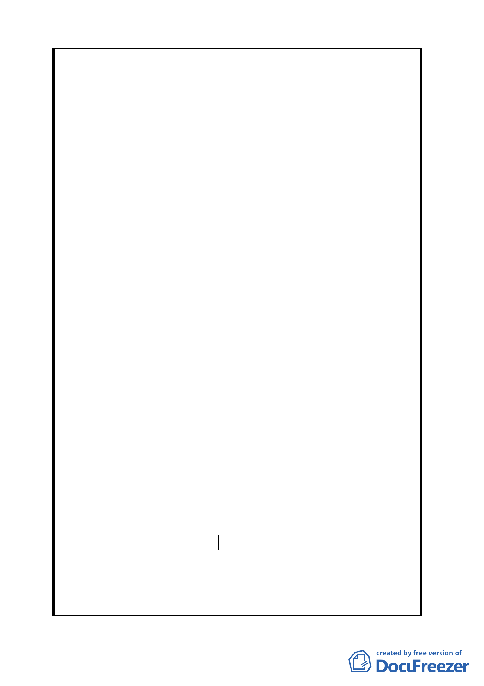

委員會決議
編
陳情理
1. 基於公義與保留都市紋理之原則，建議變更本公司
所有南海段五小段 54 及 55 地號部分土地(第三種住
宅區)為 8 公尺計畫道路，面積總計 421.89 平方公
尺。本公司將於計畫公告並完成都市計畫樁位釘樁
後 2 個月內，檢送道路設計及申請興闢相關書件，
於市府審查完成後 4 個月內興闢完成，並自願捐贈
予臺北市政府。
2. 因本公司機於維護社會公益自願劃設及興闢道路，
懇請同意將該段道路之容積(原住宅區之容積)移轉
至計畫區東側本公司所有住宅區土地上。
3. 為落實地區完整路網，健全防救災動線，並減輕市
府取得公共設施保留地之財政壓力，本公司自願興
闢計畫道路東南側 8 公尺計畫道路(南海段五小段
59、60-3 地號土地)，並捐贈予臺北市政府，惟懇
請同意該道路得依「都市計畫容積移轉實施辦法」
之計算方式辦理該道路之容積移轉。
4. 計畫區東側之既成巷道-重慶南路二段 8 巷(部分南
海段五小段 47-2 地號土地)，於計畫區東側及南側
本公司產權之計畫道路自行開闢完成供地區人車使
用後，將無實際使用之需求，故懇請同意於本公司
自願劃設道路興闢完竣後三個月內，完成此現有巷
道廢止之相關行政程序。
5. 為加速地區環境改善及增進都市計畫審議與行政效
率，懇請同意將前開四項建議辦法併與「變更臺北
市中正區南海段五小段 56-1 地號等 3 筆土地（植物
園北側）道路用地為公園用地細部計畫案」同案審
理。
一、 本變更道路用地為公園用地案照案通過。
二、 有關本建議方案，請市府發展局與土地所有權人
協商，並將結果提下次委員會議報告。
號 3 陳情人 彭耀華建築師事務所
1. 臺北市南海段五小段 47-2 等 10 筆土地原係台灣銀
由 行宿舍，目前報廢不用；依都市計畫法第 42 條第 2
項規定，「前項各項公共設施用地(本地區適用同條
第一項第二款之「公園用地」)應儘先利用適當之公
-9-